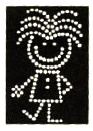
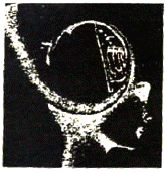
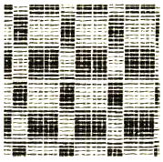
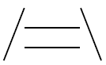
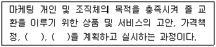
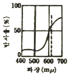
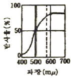
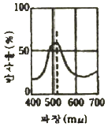
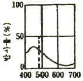

시각디자인기사 (2009-05-10 기출문제)
1과목: 시각디자인론
1. 픽토그램 디자인의 기본적인 전제와 특성에 대한 설명으로 가장 옳은 것은?
- 항상 가까운 거리에서 판독하는 것을 전제로 한다.
- 문자정보의 보조역할로 디자인 한다.
- 기본적으로 디자인의 명료성과 단순화가 요구된다.
- 문화와 언어 관습의 차이를 반영한다.
(정답률: 67%)

2. 컴퓨터 그래픽의 활용효과가 아닌 것은?
- 다양한 색채표현 및 이미지 교체가 용이하다.
- 이미지의 확대, 축소, 이동, 회전 등이 용이하다.
- 기계적 조작으로 환상적인 이미지의 표현이 어렵다.
- 이미지의 저장, 수정, 재구성이 용이하다.
(정답률: 알수없음)
3. 상표등록에 대한 설명으로 틀린 것은?
- 부정 경쟁 방지와 고유가치를 보호하기 위한 제도이다.
- 한번 등록된 상표는 매년 갱신하여야 한다.
- 선원주의를 원칙으로 한다.
- 상표의 권리 확립과 보호를 위해 신속하게 등록하여야 한다.
(정답률: 73%)
4. 독일공작연맹(DWB)을 가장 바르게 설명한 것은?
- 윌리엄 모리스를 중심으로 추진된 제품의 양질생산을 이룩하기 위한 규격화 운동
- 디자인에 있어서 합리적, 비합리적 정신과 물질에 대한 운동
- 최상의 제품을 만들기 위한 미술가, 공예가, 제품 생산자, 상업인 등이 서로 협력하는 일종의 Good Design 운동
- 과학과 기술혁신에 의한 대량생산과 제품의 다양화를 목적으로 하는 운동
(정답률: 19%)
5. 엉뚱한 발상과 비상식적인 표현으로 강한 인상을 남기는 시각표현 수법은?
- Mind Share
- Visual Scandal
- Super Graphic
- Isotype
(정답률: 55%)
6. 편집디자인에 있어서의 레이아웃(layout)이란?
- 아이디어에 따른 문자와 그림, 기호 등을 주어진 면에 구성하는 일
- 의사전달목적과 관련된 사진내용의 이해
- 내용을 전달하는 그림을 완성하는 일
- 편집의 처리규정과 운영방법을 계획하는 것
(정답률: 알수없음)
7. 인쇄물의 본문 중에 백지 페이지나, 잉크가 찍히지 않은 공백부분을 말하는 것은?
- 블랭크(blank)
- 블리드(bleed)
- 비네트(vignette)
- 브랜드(brand)
(정답률: 알수없음)
8. 디자인의 분류 중 3차원 시각전달 디자인에 해당되지 않는 것은?
- P.O.P 디자인
- 문자 디자인
- 디스플레이 디자인
- 패키지 디자인
(정답률: 50%)
9. 디자인 작업 중 제품으로서의 디자인 권리, 경쟁사의 모방으로부터의 방어를 목적으로 하는 의장특허신청이 이루어지는 과정은?
- 렌더링
- 사후관리
- 목업
- 아이디어 스케치
(정답률: 55%)
10. 캘린더 디자인의 조형요소에 관한 설명으로 틀린 것은?
- 한정된 공간 속에서 각각의 구성요소들을 효과적으로 배치해야 한다.
- 색의 감정이나 연상작용 등을 고려해야 한다.
- 숫자는 가독성이 높은 세리프체를 사용해야 한다.
- 기능적인 측면과 미적인 측면이 합치되는 레이아웃이 행해져야 한다.
(정답률: 알수없음)
11. 그라비어 인쇄의 특징에 관한 설명으로 틀린 것은?
- 플라스틱 필름, 알루미늄, 포장지 등 다양한 재료에 인쇄할 수 있다.
- 휘발성 잉크를 사용하기 때문에 점질이 없어 건조가 매우 빠르므로 고속인쇄가 가능하다.
- 인쇄공정은 간단하기 때문에 제판가격이 저렴하고 적은 양의 인쇄에도 적합하다.
- 사진인쇄에 적합하다.
(정답률: 54%)
12. 브레인 스토밍(brain storming)의 기본 규칙에 해당되지 않는 것은?
- 어떤 아이디어도 비판하지 않는다.
- 자유분방하게 많은 아이디어를 도출한다.
- 엉뚱하고 와일드한 아이디어도 좋다.
- 독창적인 아이디어 개발을 위한 고객의 제안을 통합하는 과정이다.
(정답률: 73%)
13. 소비자의 구매심리과정인 AIDMA의 각 문자의 원어를 틀리게 연결한 것은? (단,"A" 는 다섯 영문자 중 제일 첫 글자를 의미한다. )
- D : Desire
- A : Advertisement
- M : Memory
- I : Interest
(정답률: 알수없음)
14. 오프셋 인쇄(offset printing)를 가장 잘 설명한 것은?
- 함석판, 알루미늄판, 기타의 금속판에 인쇄하는 방법
- 판면에서 잉크화상을 고무 블랭킷에 전사하여 종이에 평판인쇄하는 방법
- 자성이 있는 잉크를 사용하여 문자나 기호, 줄무늬를 인쇄하는 방법
- 사진 제판법에 의한 오목판 인쇄로 부식의 방법에 따라 3가지 종류가 있음
(정답률: 알수없음)
15. '여러 가지 일을 동시에 처리하다.'라는 뜻으로 컴퓨터 1대로 복수의 업무나 작업을 하는 것은?
- Network
- Multi Tast
- KIOSK
- Shareware
(정답률: 55%)
16. 아르누보에 관한 설명으로 틀린 것은?
- 자연물의 유기적 형태로부터 모티브를 찾아 양식화하였다.
- 비대칭적이고 생동적인 곡선을 주로 사용하였다.
- 대량생산을 위한 합리적이고 기능적인 양식이다.
- 1890년대 일어났던 신미술운동으로서 과거의 양식에서 벗어나 새로운 양식을 탐색했던 장식미술운동이다.
(정답률: 50%)
17. 로드첸코, 타틀린, 베스닌이 대표적인 인물이며 러시아 혁명기의 대표적인 예술운동은?
- 구성주의
- DWB
- 유켄트스틸
- 분리파
(정답률: 37%)
18. 자연적 기호 즉, 연기를 보고 불을 연상하는 것을 이용하는 것으로 소리, 색깔, 빛, 모양 등의 일정한 부호를 사용하여 통신하는 것은?
- Signal
- Sign
- Symbol
- Mark
(정답률: 알수없음)
19. 교통광고(transportation advertising)의 가장 큰 특징은?
- 무조건적 노출
- 속보성
- 대량전달
- 기록 보관성
(정답률: 64%)
20. 다음 중 옥외광고는?
- 빌도드(Billboard)
- 퍼블리시티(publicity)
- P.O.P
- D.M
(정답률: 73%)
2과목: 조형심리학
21. 다음 중 조화의 전제는?
- 통일성
- 대비
- 강조
- 대칭성
(정답률: 77%)
22. 리듬(Rhythm)과 관련이 없는 것은?
- 반복(Repetition)
- 점이(Gradation)
- 대칭(Symmetry)
- 방사(Radiation)
(정답률: 64%)
23. 지각심리에서 근접성과 공간에 대한 설명 중 틀린 것은?
- 가까이에 있는 두 개 또는 그 이상의 시각요소들은 패턴이나 그룹으로 보여질 가능성이 크다.
- 접근성과 면적의 문제에 있어서는 공간의 면적이 작으면 작을수록 형태로 보이는 가능성이 작아진다.
- 모든 면은 선으로 둘러싸이는데 이러한 선들의 접근성이 크면 클수록 선 안의 면이 모양으로 보일 가능성이 커진다.
- 접근성은 사물의 공간의 배열에만 한정되지 않고, 사건들의 일시적 배열에도 적용된다.
(정답률: 46%)
24. 동양화에서 가장 많이 사용된 조형의 요소는?
- 점
- 선
- 면
- 색
(정답률: 60%)
25. 형과 바탕의 식별에 대한 내용으로 틀린 것은?
- 바탕은 형의 뒤쪽에 펼쳐져 있는 것처럼 보인다.
- 형의 색채는 바탕의 색채보다 견실하고 실질적으로 보인다.
- 형은 마치 어떤 사물처럼 보이지만 바탕은 그렇지 못하다.
- 바탕은 형보다 지배적이고 상징적이며 쉽게 기억이 된다.
(정답률: 55%)
26. 달리는 차안에서 바라보는 가로수가 관찰자의 이동과는 무관하게 변함없이 서 있음을 알게 하는 지각원리는?
- 크기 항상성
- 모양 항상성
- 색채 항상성
- 위치 항상성
(정답률: 70%)
27. 결핍된 것을 충족시켜 "동질정체(homeostasis)" 상태로 회귀하려는 심리적 상태는?
- 지각
- 감각
- 인식
- 욕구
(정답률: 70%)
28. 점이 움직이면 선이, 점이 많이 모이면 면의 의식이 생긴다. 다음 그림 중 점의 면화와 거리가 먼 것은?



(정답률: 42%)
29. 밝은 곳에서 어두운 곳으로 가면 처음에는 잘 안보인다가 나중에 점차 잘 보이게 되는 현상은?
- 명순응
- 암순응
- 착시
- 색순응
(정답률: 55%)
30. 입체경(Stereoscope)과 밀접한 관련이 있는 것은?
- 대기적 조망
- 양안 불일치
- 직선적 조망
- 수렴
(정답률: 19%)
31. 다음 중 유기적인 형태가 아닌 것은?
- 해안의 조약돌
- 심플한 카라 꽃
- 매끄러운 피부의 돌고래
- 이집트의 피라밋
(정답률: 62%)
32. 대상의 밝기정보를 처리하는 망막상의 세포는?
- 원추체
- 간상체
- 수정체
- 변사체
(정답률: 55%)
33. 다음 중 가현운동(apparent movement)과 관계 없는 것은?
- 도지반전도형
- 영화
- 네온싸인
- 컴퓨터 모니터
(정답률: 67%)
34. 어느 길이를 1로 하여 이를 기준으로 1/1, 1/2, 1/3, 1/4.... 등으로 나누어 가는 형태의 수열은?
- 조화 수열
- 등비 수열
- 피보나치 수열
- 펠의 수열
(정답률: 알수없음)
35. 선에 대한 설명 중 틀린 것은?
- 선은 하나의 점이 이동하면서 이루는 자취이다.
- 선은 길이가 축소되면 그 성질을 잃는다.
- 선의 성격은 길이로 나타낸다.
- 선의 정적 특성에 영향을 끼는 것은 운동의 속도, 강약, 방향 등이다.
(정답률: 30%)
36. 빅토르 바자렐리(Victor Vasarely)의 평면상의 기하학적인 형태가 우리의 시각에 입체적인 형태로 인식되는 것은 어떠한 현상에 의한 것인가?
- 모아레 현상
- 착시 현상
- 잔상 작용
- 어른거리는 효과
(정답률: 40%)
37. 다음 그림에서는 두개의 수평선 중 위의 것이 더 길어보이는데, 그 이유에 대한 설명으로 옳은 것은?

- 형태주의 심리학의 폐쇄성의 원리에 의한 것이다.
- 형태주의 심리학의 근접성의 원리에 의한 것이다.
- 좌우의 선분이 원근감에 단서 역할을 하기 때문이다.
- 위아래로 배열된 수편선의 형태가 원인이다.
(정답률: 알수없음)
38. 게쉬탈트 심리학의 지각체계화의 원리가 아닌 것은?
- 근접성의 원리
- 폐쇄성의 원리
- 연속성의 원리
- 깊이성의 원리
(정답률: 72%)
39. 베르트하이머가 개념을 정리한 프라그나쯔(Pragnanz)의 원리는?
- 유사성
- 간결성
- 폐쇄성
- 근접성
(정답률: 알수없음)
40. 일직선상을 하나의 원이 미끌어지지 않고 굴러갈 때 원위의 한 점이 그리는 곡선은?
- 아르키메데스 와선
- 인벌류트 곡선
- 사이클로이드 곡선
- 트로코이드 곡선
(정답률: 70%)
3과목: 광고학
41. 프랑크푸르트 학파의 미디어론은 자본주의 사회에 대한 문화비평의 일환으로 설명된다. 프랑크푸르트 학파의 대표적인 학자는?
- 고프만(E.Goffman)
- 알튀세르(L.Althusser)
- 호르크하이머(M,Horkheimer)
- 보드리야르(J,Baudrillard)
(정답률: 20%)
42. SWOT 분석에서 "O"는 무엇을 의미하는가?
- 목표(Object)
- 효력(Operation)
- 견해(Opinion)
- 기회(Opportunity)
(정답률: 알수없음)
43. 우리나라의 최초의 CM 송은?
- 오란씨 CM송
- 진로소주 CM송
- 줄줄이 사탕 CM송
- 샘표간장 CM송
(정답률: 24%)
44. 다음 중 광고 보디 카피(body copy)가 반드시 갖추어야 할 요건은?
- 설득성
- 전문성
- 학술성
- 경제성
(정답률: 71%)
45. 미국 마케팅 협회(AMA)가 마케팅의 관점에서 본 광고의 정의를 구성하는 4가지 요소에 포함되지 않는 것은?
- 명시된 광고주
- 아이디어, 상품 또는 서비스
- 비인적(비대인적) 커뮤니케이션
- 무료형태
(정답률: 알수없음)
46. 크리에이티브 리뷰 보드에 대한 설명으로 옳은 것은?
- 광고 시안에 대한 광고주의 승인을 얻기 위해 제작된 아이디어 스케치 상태를 말한다.
- 아이디어 회의의 다른 말로 주로 카피라이터, 디자이너 등 제작관련 담당자들로 구성된다.
- 크리에이티브 디렉터들의 모임으로 주로 사원채용, 팀 간의 인원 배치 등에 관한 의견을 제시한다.
- 광고작품의 품질관리, 향상을 목적으로 설치된 체크시스템으로 대개 크리에이티브 책임자들로 구성된다.
(정답률: 46%)
47. 헤드라인에 관한 설명으로 틀린 것은?
- 주목을 끌어야 하고, 즉각적인 임팩트를 제공해야 한다.
- 설득력보다 시각적 효과가 중요하므로, 문장은 짧을수록 좋고, 글씨는 클수록 좋다.
- 다른 요소들과 잘 어울려서 조화될 수 있어야 한다.
- 너무 일반적이거나, 어떤 상황, 어느 제품이나 적용될 수 있는 것이어서는 곤란하다.
(정답률: 10%)
48. 1960년 이후 미국 마케팅 협회에서는 마케팅을 다음과 같이 정의하였다. ( )안에 들어갈 적당한 단어는?

- 판매촉진, 유통(배급)
- 소매점 확보, 유통(배급)
- 판매촉진, 커뮤니케이션
- 소매점 확보, 커뮤니케이션
(정답률: 50%)
49. 시간이 지난 후에 설득효과가 나타나는 광고효과는?
- 수면자(sleeper)효과
- 이용과 충족효과
- 문화계발효과
- 의제설정효과
(정답률: 60%)
50. 소비자 정보처리과정에서 가장 먼저 일어나는 것으로 노출된 자극을 감지하고 이해하는 주관적 방법을 뜻하는 것은?
- 기억
- 태도
- 지각
- 학습
(정답률: 59%)
51. 신문, 잡지 부수공사기구인 ABC는 무엇의 약자인가?
- Advertising Business Council
- Association of Better Communication
- Advertising Bureau of Communication
- Audit Bureau of Circulation
(정답률: 8%)
52. 매체에서 말하는 RPG란?
- 특정 매체간의 시청률 차이
- 지역간 총시청률
- 광고를 얼마나 자주 보았는가 하는 비율
- 캠페인 기간동안 도달률의 총합
(정답률: 30%)
53. TV에서 광고만 나오는 채널을 돌려서 광고효과가 떨어진 다는 것은?
- Zapping
- Channel Mix
- Circulation
- Channel changes
(정답률: 알수없음)
54. 다음 중 마케팅 기본 기능은?
- 이미지창조
- 생산창조
- 배급창조
- 수요창조
(정답률: 알수없음)
55. 특정한 수단을 통하여 무엇인가 있는 사실을 전달함으로써 많은 사람들의 행동을 일정한 방향으로 진행시키고자 하는 계획적인 활동은?
- Circulation
- Propaganda
- Sales Promotion
- Direct Mail
(정답률: 알수없음)
56. 기업을 매수할 때 재정상의 조건 외에 브랜드의 가치도 평가의 대상이 되고 있다. 이러한 브랜드의 가치는?
- 브랜드의 지명도
- 브리드의 만족
- 브랜드의 인지
- 브랜드의 자산
(정답률: 28%)
57. 기업이나 단체, 개인이 정치, 경제, 문화 등 사회적인 문제에 대해 자신의 생각을 표명하는 광고는?
- 공익광고
- 비교광고
- 기업광고
- 의견광고
(정답률: 30%)
58. 광고 커뮤니케이션의 목적이 아닌 것은?
- 새로운 고객을 창출하는데 있다.
- 고객을 이탈하지 않도록 하는데 있다.
- 제품에 대한 고객의 불만을 희석시키는데 있다.
- 충성스러운 고객을 유지하고 늘리는데 있다.
(정답률: 55%)
59. D.M.(Direct Mail)의 특성이 아닌 것은?
- 시각적 탄력성
- 예산의 비탄력성
- 표현의 자유성
- 비노출성
(정답률: 50%)
60. 커뮤니케이션의 일반적인 과정인 "누가, 누구에게, 어떤 경로를 통하여, 어떤 효과를 얻고자, 무엇을 말하는가"라는 요소 중에서 "무엇을"에 해당하는 것은?
- 매체
- 메시지
- 수용자
- 상품
(정답률: 알수없음)
4과목: 색채학
61. KS 규격에 의한 관용색명과 색계열의 연결이 틀린 것은?
- 벽돌색(copper brown) - R 계열
- 올리브그린(olive green) - GY 계열
- 라벤드(lavender) - RP 계열
- 크림색(cream) - Y 계열
(정답률: 알수없음)
62. 한국 전통 음양 오행설에 기초한 오방색에 속하지 않는 것은?
- 청
- 황
- 자
- 흑
(정답률: 50%)
63. 조명등과 연색성에 관한 설명 중 틀린 것은?
- 청색은 백열등에서 약간 녹색을 띤다.
- 청색은 형광등에서 크게 변하지 않는다.
- 나트륨등에서는 빨강이 강조된다.
- 빨강은 백열등에서 더욱 선명하다.
(정답률: 34%)
64. 색의 진출성에 대한 설명으로 틀린 것은?
- 어두운 색보다 밝은 색일수록 진출성이 높다.
- 순색과 혼색의 경우 혼색이 진출성이 높다.
- 저채도의 배경에서는 고채도 색이 진출성이 높다.
- 한색보다 난색이 친출성이 높다.
(정답률: 67%)
65. 컬러 TV의 브라운관 형광면에는 적(Red), 녹(Green), 청(Blue)색들이 발광하는 미소한 형광 물체에 의하여 혼색된다. 이러한 혼색방법은?
- 병치가법 혼색
- 동시가법 혼색
- 계시가법 혼색
- 색료감법 혼색
(정답률: 59%)
66. 기업색채의 선택요건으로 부적당한 것은?
- 기업의 이념과 실체에 맞는 이상적 이미지를 표현할 수 있는 색채요건
- 눈에 띄기 쉬운 색이며 타사와 구별성이 뛰어난 색채요건
- 기업의 독특한 이미지를 살리기 위한 복잡하고 개성적인 색채 요건
- 여러 가지 소재로 재현이 용이하고 관리하기 쉬운 색채요건
(정답률: 60%)
67. 색채계획과정을 단계별로 나열한 것 중 가장 합리적인 것은?
- 색채전달계획 → 색채환경분석 → 색채심리분석 → 디자인에 적용
- 색채환경분석 → 색채심리분석 → 색채전달계획 → 디자인에 적용
- 새개채전달계획 → 색채심리분석 → 색채환경분석 → 디자인에 적용
- 색채환경분석 → 색채전달계획 → 색채심리분석 → 디자인에 적용
(정답률: 알수없음)
68. 다음은 빨강, 노랑, 녹색, 파랑의 분광분포 곡선이다. 노랑(Yellow)의 분광분포 곡선은?




(정답률: 62%)
69. KS 규격에서 순색의 노랑을 나타내는 먼셀 기호는? 77.문,스펜서 색채조화론에서 미도(美度)는 일반적으로 얼마이상이면 그 배색이 좋다고 하는가?
- 5Y 14/9
- 10Y 8.5/10 조절 방법은?
- 5Y 8.5/14
- 10Y 10/8
(정답률: 40%)
70. 녹색 잔디 구장 위에서 가장 눈에 잘 띄는 유니폼 색은?
- 자주
- 보라
- 파랑
- 연두
(정답률: 64%)
71. 오스트발트 표색기호 중 가장 강한 색상대비가 느껴지는 조화는?
- 4ie – 12ie
- 3ne - 21ne
- 1na – 21na
- 14na - 17na
(정답률: 10%)
72. 헤링(E.Hering)의 색각이론(色覺理論)은 색의 동화작용(assimilation)과 이화작용(dissimilation)으로 설명할 수 있다. 다음 색 중 동화작용에 관계되는 색은?
- red
- green
- white
- yellow
(정답률: 22%)
73. 빛의 파장 단위로 사용되는 nm(nanometer)의 단위를 올바르게 나타낸 것은?
- 1nm = 1/1만 mm
- 1nm = 1/10만 mm
- 1nm = 1/100만 mm
- 1nm = 1/1000만 mm
(정답률: 55%)
74. 먼셀의 표색계를 설명한 것으로 틀린 것은?
- 먼셀 표색계의 주요 5색은 빨강(R), 노랑(Y), 녹색(G), 파랑(B), 보라(P)이다.
- 색의 삼속성에 의한 방법으로 색상(Hue), 명도(Value), 채도(Chrom)의 표기 방법은 HV/C이다.
- 먼셀 색상환에서 각 색상의 180도 반대쪽에 위치하는 색상을 그 색상의 보색이라 한다.
- 먼셀 밸류우(Munsell Value)라고 불리는 명도(V)축에서는 1에서 10까지 번호가 붙여지고 있다.
(정답률: 알수없음)
75. 명시도에 관한 설명 중 틀린 것은?
- 색이 잘 보인다는 것은 이웃하는 색과의 관계에 의해 결정된다.
- 검은 종이 위의 파란색 글씨보다 노란색 글씨가 명시도가 낮다.
- 노란색 바탕 우의 검은색 글씨가 가장 명시도가 높다.
- 빨간 배경에 녹색글씨는 색상차는 크지만 명도차가 적어 명시도가 낮다.
(정답률: 46%)
76. 오스트발트(Ostwald)의 색채조화론과 관련이 있는 것은?
- 동일조화
- 스칼라 모먼트
- 등순색 계열의 조화
- 미도
(정답률: 63%)
77. 문,스펜서 색채조화론에서 미도(美度)는 일반적으로 얼마이상이면 그 배색이 좋다고 하는가?
- 0.9
- 0.7
- 0.5
- 0.3
(정답률: 65%)
78. 어떤 대상의 필요조건을 보다 합리적으로 해결하여 그 결과로서 선택된 배색을 기능배색이라고 한다. 기능배색에는 신호등, 표지류 등이 있는데 다음 주 가장 고려해야 할 점은?
- 기호성(嗜好性)
- 유목성(誘目性)
- 유행성(流行性)
- 환경성(環境性)
(정답률: 60%)
79. 색의 혼합에 대한 설명 중 잘못된 것은?
- 가산혼합시 2차색이 1차색보다 명도와 채도가 높아진다.
- 가산혼합시 적(R)과 녹(G)의 혼합색은 황(Y)이다.
- 색광의 3원색을 혼합한 2차색이 색료의 3원색이 된다.
- 원판회전혼합이나 병치혼합도 일종의 가산혼합이다.
(정답률: 20%)
80. 광원에 따라 물체의 색이 달라보이는 것과는 달리 서로 다른 두 색이 어떤 광원 아래서는 같은 색으로 보이는 현상은?
- 연색성
- 잔상
- 분광반사
- 메타메리즘
(정답률: 34%)
5과목: 사진 및 인쇄제판론
81. 다음 중 가장 좁은 화각을 갖는 렌즈의 초점거리는?
- 28mm
- 35mm
- 50mm
- 1⑤mm
(정답률: 알수없음)
82. 피사계 심도에 대한 설명으로 옳은 것은?
- 촬영거리가 멀수록 피사계 심도가 얕다.
- 초점거리가 긴 렌즈일수록 피사계 심도가 깊다.
- 촬영거리와 피사계 심도와는 관계가 없다.
- 조리개를 개방할수록 피사계 심도는 얕다.
(정답률: 28%)
83. 화각 밖에서 오는 유해광선을 차단을 목적으로 사용하는 사진 용구는?
- 필터
- 릴리즈
- 후드
- 중간링
(정답률: 10%)
84. 섬유의 표면을 아교, 송진, 녹말, 합성수지와 같은 교질재료로 피복시키는 종이 제조 공정은?
- 고해(Beating)
- 사이징(Sizing)
- 전충(Loading)
- 착색(Coloring)
(정답률: 알수없음)
85. 그라비어 인쇄는 어떤 인쇄방법에 속하는가?
- 공판인쇄
- 평판인쇄
- 오목판인쇄
- 볼록판인쇄
(정답률: 50%)
86. 컬러 네거티브 인화시 인화지에서 저난적으로 Yellow가 강하게 나타났다. 이 때 확대기에서의 가장 알맞은 필터 조절방법은?
- Cyan 과 Magenta 필터의 수치를 더한다.
- Yellow 필터의 수치를 더한다.
- Yellow 필터의 수치를 줄인다.
- Cyan 필터의 수치를 줄인다.
(정답률: 알수없음)
87. 다층평판에서 비화선부의 금속으로 가장 적합한 것은?
- 크롬
- 놋쇠
- 구리
- 은
(정답률: 46%)
88. 사진 촬영에서 접사기구에 해당되지 않는 것은?
- 중간링(extension tube)
- 벨로즈(bellows)
- 시프트렌트(shift lens)
- 클로즈업렌즈(close-up lens)
(정답률: 20%)
89. 컬러사진 촬영시 맑은 날 촬영하면 그늘진 부분의 부분적인 색온도 상승에 의하여 푸른색이발생되는데, 이것을 방지하기 위하여 사용하는 필터는?
- SL 필터
- R 필터
- ND 필터
- YG 필터
(정답률: 31%)
90. 노출이 과부족을 허용하는 범위로서, 흑백 네거티브필름의 유체층을 저감도 유제층과 고감도 유제층으로 나누는 가장 궁극적인 이유는?
- 콘트라스트를 높이기 위하여
- 해상력을 높이기 위하여
- 관용도를 높이기 위하여
- 입상성을 높이기 위하여
(정답률: 알수없음)
91. 노출상황이 1/125, f/8인 경우 노출배수가 4인 필터를 장착하려고 한다. 보정된 노출은 얼마로 하는 것이 가장 바람직한가?
- 1/60, f/8
- 1/125, f/5.6
- 1/60, f/5.6
- 1/30, f/11
(정답률: 30%)
92. 비스듬히 비추는 광선으로 입체감 및 재질감 표현에 가장 효과적인 채광법은?
- 순광
- 사광
- 역광
- 반역광
(정답률: 50%)
93. 다음 중 현상액의 촉진제로 사용하지 않는 것은?
- 붕사
- 브롬화칼륨
- 탄산나트륨
- 탄산수소나트륨
(정답률: 0%)
94. 제지공정 중 펄프를 물속에서 기계적으로 두들겨서 잘게 부수어 분산시키는 공정은?
- 사이징
- 비팅
- 초지
- 윤내기
(정답률: 37%)
95. 2개의 레이저광이 서로 만나면 빛의 간섭효과가 일어나는데, 이러한 간섭효과가 만드는 간섭무늬를 이용하여 3차원의 실물체 영상을 기록, 재생하는 기술을 무엇이라 하는가?
- 형광사진
- 적외사진
- 스테레오그래피
- 홀로그램
(정답률: 50%)
96. 인쇄물 표면가공의 목적에 해당되지 않는 것은?
- 인쇄물에 광택을 준다.
- 잉크의 퇴색을 방지한다.
- 인쇄물의 내구성을 높인다.
- 재활용을 쉽게 한다.
(정답률: 알수없음)
97. 미리 감광액을 칠한 상태의 판 재료로 암반응이 거의 없고 품질 변화가 적어 작업의 표준화가 가장 쉬운 판은?
- 와이프온판
- 구리판
- PS판
- 아연판
(정답률: 알수없음)
98. 컬러스캐너의 기본 구성 중 원고를 스캐닝하여 미세한 화소로 분할하고, 이 화소의 농담과 색성분을 색분해 필터를 통하여 광전자 증배관에 의해 전기신호로 바꾸는 역할을 하는 부분은?
- 입력주사부
- 전자계산부
- 출력주사부
- 망점발생부
(정답률: 0%)
99. 컬러필름의 현상과정 중 컬러사진에 필요한 색소화상만을 남기기 위한 전처리 과정으로서, 금속은을 산화시키는 과정은?
- 흑백현상
- 발색현상
- 정착
- 표백
(정답률: 알수없음)
100. 다음 중 인쇄 기계의 3형식이 아닌 것은?
- 평압식
- 원압식
- 윤전식
- 공판식
(정답률: 50%)